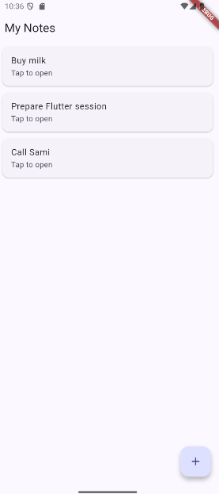

Prerequisites — install before the session
Download and install these tools before the session (large downloads: the room's Wi-Fi may be slow). Step 0 only verifies and configures these installs.
- Set up Flutter and run an app on an Android device
- Build a screen from widgets and use hot reload
- Store notes in a local SQLite database (sqflite)
- Read, add, edit and delete notes with a form and navigation
| Tool | Why | Notes |
|---|---|---|
| Flutter SDK (latest stable 3.47.x, Windows zip) | The framework | docs.flutter.dev/install/manual — extract to C:\Users\<name>\develop |
| Git for Windows | Prerequisite of the Flutter SDK | git-scm.com/downloads/win |
| Android Studio (full version) | Provides the Android SDK, platform tools, licenses and the emulator | developer.android.com/studio — at least 7.5 GB free disk, 10 GB recommended. Used for the SDK, not as the editor. |
| Visual Studio Code + the Flutter extension | The editor (the Flutter extension also installs the Dart extension) | code.visualstudio.com |
| Android phone + USB cable (recommended) | Run the app without the emulator | Enable Developer options + USB debugging (Step 0) |
Check before the session
- Disk space: at least 10 GB free
- The Flutter zip is downloaded (do not extract inside
C:\Program Filesor any path with spaces) - Android Studio opens and finished its first-run setup wizard
- VS Code opens and the Flutter extension is installed
Path setup on Windows 11: How To Install Flutter In Windows 11. It does not cover Android Studio or the phone: Step 0 does.The app targets Android (phone or emulator): sqflite does not support Windows desktop or web.
Step 0 — Setup
Flutter compiles your Dart code into an Android app: it needs the Flutter SDK, the Android SDK (provided by Android Studio) and a device. flutter doctor checks all of this at once.
- Check that Git for Windows is installed:
git --version - Extract the SDK zip into
C:\Users\<name>\developto getC:\Users\<name>\develop\flutter. No spaces or special characters in the path, not inC:\Program Files: the Flutter tools fail on such paths. - Add this entry to the user
Path(Win + Pause → Advanced System Settings → Environment Variables → userPath→ New), then move it to the top:%USERPROFILE%\develop\flutter\bin
Search for “environment variables” and open Edit the system environment variables. Frame from the video How To Install Flutter In Windows 11. 
In the user Path, click New and paste the entry. Your list of entries will differ; the video installs toC:\flutter, we usedevelop. Frame from the same video. - Close and reopen all terminals and VS Code. A program only reads
Pathwhen it starts. - Verify the installation:
flutter --version dart --version flutter doctor
Expected output of flutter --version: Flutter 3.47.9, stable channel.
Expected output of flutter doctor: green checks for Flutter, Android toolchain and Connected device. - Open Android Studio → More Actions → SDK Manager and install: Android SDK Platform, SDK Command-line Tools, Build-Tools, Platform-Tools, Android Emulator.

Android Studio → Settings → Languages & Frameworks → Android SDK → SDK Tools tab. Tick the outlined tools: Build-Tools, Command-line Tools, Platform-Tools and Emulator. A dash means installed with an update available. - Accept the Android licenses (answer
yto each question):flutter doctor --android-licenses - Choose one run target:
- Phone (recommended, fastest): Settings → About phone → tap “Build number” 7 times to enable Developer options, then turn on USB debugging. Plug in the cable: the phone asks “Allow USB debugging?”, tap Allow (tick “Always allow from this computer”). This is the RSA prompt; the phone then shows up in
flutter devices. If Windows doesn't see the phone, install the Google USB driver.
On the phone: Settings → Developer options. Turn on USB debugging (outlined, shown off here). Wireless debugging is the optional Wi-Fi alternative below. Menu names vary by phone brand. - Phone over Wi-Fi (Android 11+, optional): turn on Wireless debugging in Developer options. In Android Studio, open Device Manager → Pair devices over Wi-Fi, then scan the QR code with the phone (Wireless debugging → Pair using QR code). The PC and the phone must be on the same Wi-Fi network, and some shared or school networks block this: if pairing fails, use the USB cable.

Android Studio: scan this QR code from the phone, in Developer options → Wireless debugging → Pair using QR code. - Emulator: Android Studio → Device Manager → create a virtual device. Needs virtualization enabled in the BIOS: may be slow or unavailable on lab PCs.

Example of flutter emulators: one Android emulator is available. Start it from Device Manager, then check again withflutter devices. - Browser (Chrome), fallback: no Android device (for example an iPhone: iOS apps cannot be built on Windows), or Android Studio does not work? Run in Chrome with
flutter run -d chrome. This works for Steps 0 to 2 (layout and hot reload). From Step 3 the database (sqflite) does not run in a browser: pair up with a neighbour who has an Android device for the rest.
flutter devices
Example of flutter deviceswith no Android device yet: only Windows, Chrome and Edge. Plug in the phone or start the emulator until an Android device appears, then use it (not Windows or Chrome). - Phone (recommended, fastest): Settings → About phone → tap “Build number” 7 times to enable Developer options, then turn on USB debugging. Plug in the cable: the phone asks “Allow USB debugging?”, tap Allow (tick “Always allow from this computer”). This is the RSA prompt; the phone then shows up in
flutter doctor shows for Flutter and Android toolchain, and flutter devices lists your phone or emulator. Warnings for Chrome, Visual Studio or Xcode can be ignored.No checkpoint for this step: there is no code yet, only the setup. Fix the errors below, or ask the instructor or a neighbour.
| Error / symptom | Cause | Fix |
|---|---|---|
'flutter' is not recognized | PATH not applied | Reopen the terminal; check the path ends in \flutter\bin; check for typos. |
flutter.bat missing in bin | Antivirus quarantine | Trust the SDK folder in the antivirus, extract again. |
| Android licenses not accepted | flutter doctor --android-licenses, answer y. | |
cmdline-tools component is missing | Not installed | Android Studio → SDK Manager → SDK Tools → Android SDK Command-line Tools. |
Phone not in flutter devices | USB debugging off / driver | Re-enable USB debugging, accept the RSA prompt on the phone, install the USB driver, try another cable. |
| Emulator won't start | Virtualization off | Enable VT-x/AMD-V in the BIOS or use a phone. |
Building with plugins requires symlink support | Windows needs Developer Mode for plugins | Settings → For developers → Developer Mode ON, then flutter pub get. |
Step 1 — First run
flutter create generates a complete app (a counter). Hot reload injects your changed code into the running app without losing its state: this is what makes Flutter fast to develop with.
- Open a terminal in a folder without spaces (for example
C:\Users\<name>\projects), create the project and open it in VS Code:flutter create notes_app cd notes_app code . - Plug in the phone (or start the emulator) and run the app from the
notes_appfolder. If Flutter offers several devices, pick the Android device (not Windows or Chrome). The first build is slow (several minutes: Gradle downloads its dependencies).flutter run - Tap the + button a few times: the counter goes up.
- In
lib/main.dart, find the text'Flutter Demo Home Page'(inMyHomePage(title: ...)) and replace it with'My first app'. Save, then pressrin the terminal: the title changes and the counter keeps its value. - Press
R(hot restart): the app restarts and the counter goes back to 0. (qstops the app; leave it running for now.)
r the counter keeps its value, after R it goes back to 0.Checkpoint: tag step-1. Download https://github.com/waelbouazizii/flutter-notes-solution/archive/refs/tags/step-1.zip, unzip it into a folder without spaces, then run flutter pub get and flutter run.
| Error / symptom | Cause | Fix |
|---|---|---|
Phone not in flutter devices | USB debugging off / driver | Re-enable USB debugging, accept the RSA prompt on the phone, install the USB driver, try another cable. |
| Phone: app installs but crashes on start | Old install conflicts | flutter clean, uninstall the app from the phone, flutter run. |
| sqflite errors on Windows or Chrome | sqflite does not support Windows desktop or web | Pick the Android device: flutter devices, then flutter run -d <id>. |
Step 2 — Widgets & layout
Scaffold, ListView, Card and ListTile.In Flutter, everything is a widget, and the screen is a tree of widgets. A StatelessWidget has no data that changes. Scaffold is the skeleton of a page (app bar, body, floating button) and ListView.builder only builds the rows visible on screen.
What we are building

How it is built: a screen is a tree of widgets, like boxes inside boxes. Read it from the outside in: each widget is placed inside the one above it.
- 1
Scaffold- 2
appBar:AppBar - 3
body:ListView.builder→ repeated once per title:- 4
Card→ 5ListTile→ 6title+ 7subtitle
- 4
- 8
floatingActionButton:FloatingActionButton
- 2
The red DEBUG ribbon in the top right corner only appears in debug builds: ignore it.
| # | Widget | What it does | Where in the code |
|---|---|---|---|
| 1 | Scaffold | The skeleton of the page: it holds the app bar, the body and the floating button. | return Scaffold( |
| 2 | AppBar | The bar at the top, with the title. | appBar: AppBar(title: const Text('My Notes')) |
| 3 | body (ListView.builder) | The main area. A scrollable list that builds only the visible rows. | body: ListView.builder( |
| 4 | Card | One raised “card” per row, with a margin around it. | return Card( |
| 5 | ListTile | A ready-made row: it places a title and a subtitle for you. | child: ListTile( |
| 6 | title | The main text of the row (here, the note title). | title: Text(titles[index]) |
| 7 | subtitle | The small text under the title. | subtitle: const Text('Tap to open') |
| 8 | FloatingActionButton | The round + button that floats at the bottom right. | floatingActionButton: FloatingActionButton( |
- Skeleton. Replace all of
lib/main.dartwith two widgets:NotesApp(the root: Material Design, theme, first screen) andNotesListScreen(our page, empty for now).lib/main.dartimport 'package:flutter/material.dart'; void main() { // Every Dart program starts here runApp(const NotesApp()); // Show NotesApp on screen } class NotesApp extends StatelessWidget { // Root widget: nothing in it changes, so it is Stateless const NotesApp({super.key}); @override Widget build(BuildContext context) { // Describes the screen; Flutter calls it on every redraw return MaterialApp( // Sets up Material Design, the theme and the first screen title: 'Notes', theme: ThemeData( colorScheme: ColorScheme.fromSeed(seedColor: Colors.indigo), // Builds a full color palette from one color ), home: const NotesListScreen(), // The first screen shown ); } } class NotesListScreen extends StatelessWidget { // A screen with fixed content for now const NotesListScreen({super.key}); @override Widget build(BuildContext context) { // Describes the screen; Flutter calls it on every redraw return Scaffold( // Page skeleton: app bar, body, floating button appBar: AppBar(title: const Text('My Notes')), // Top bar with the title ); } }Recipe to create any widget: (1) write
class Name extends StatelessWidget, (2) add aconstconstructor withsuper.key, (3) overridebuildand return the widgets to draw. - Save and press
R(hot restart):main()changed, so hot reload is not enough. You should see a “My Notes” bar and an empty page. - The list. In
NotesListScreen, replace only thebuildmethod with this one. It adds the data (titles) and thebody: aListView.builderthat makes oneCardwith aListTileper title.@override Widget build(BuildContext context) { // Describes the screen; Flutter calls it on every redraw final titles = ['Buy milk', 'Prepare Flutter session', 'Call Sami']; // Hard-coded data, replaced by SQLite in Step 4 return Scaffold( // Page skeleton: app bar, body, floating button appBar: AppBar(title: const Text('My Notes')), // Top bar with the title body: ListView.builder( // Scrollable list that builds only the visible rows itemCount: titles.length, // How many rows itemBuilder: (context, index) { // Called once per row; index is the row number return Card( // One card per row margin: const EdgeInsets.symmetric(horizontal: 12, vertical: 6), // Space around the card child: ListTile( // Standard row: title and subtitle title: Text(titles[index]), // Title of this row subtitle: const Text('Tap to open'), ), ); }, ), ); } - Save and press
r: three cards appear. Match the code to the screen:itemCount→ the number of rows;itemBuilder→ builds oneCardper title. - The + button. Inside the
Scaffold, add these 4 lines right after thebody: after the line),that closesListView.builder, and before the final);. Do not copy any closing bracket that is already in your file.floatingActionButton: FloatingActionButton( // The round + button onPressed: () {}, // Does nothing yet child: const Icon(Icons.add), // The + icon ), - Save and press
r: the + button appears at the bottom right. It does nothing yet (onPressed: () {}). - Change one title in the
titleslist, save and pressr: the list updates instantly. - The file
test/widget_test.dartnow shows an error (it usesMyApp, which no longer exists). Delete this file for this session: it does not blockflutter run.
Full code of this step
Compare your files with these, or copy them with the Copy button. Only the files that changed in this step are shown.
lib/main.dart
import 'package:flutter/material.dart';
void main() { // Every Dart program starts here
runApp(const NotesApp()); // Show NotesApp on screen
}
class NotesApp extends StatelessWidget { // Root widget: nothing in it changes, so it is Stateless
const NotesApp({super.key});
@override
Widget build(BuildContext context) { // Describes the screen; Flutter calls it on every redraw
return MaterialApp( // Sets up Material Design, the theme and the first screen
title: 'Notes',
theme: ThemeData(
colorScheme: ColorScheme.fromSeed(seedColor: Colors.indigo), // Builds a full color palette from one color
),
home: const NotesListScreen(), // The first screen shown
);
}
}
class NotesListScreen extends StatelessWidget { // A screen with fixed content for now
const NotesListScreen({super.key});
@override
Widget build(BuildContext context) { // Describes the screen; Flutter calls it on every redraw
final titles = ['Buy milk', 'Prepare Flutter session', 'Call Sami']; // Hard-coded data, replaced by SQLite in Step 4
return Scaffold( // Page skeleton: app bar, body, floating button
appBar: AppBar(title: const Text('My Notes')), // Top bar with the title
body: ListView.builder( // Scrollable list that builds only the visible rows
itemCount: titles.length, // How many rows
itemBuilder: (context, index) { // Called once per row; index is the row number
return Card( // One card per row
margin: const EdgeInsets.symmetric(horizontal: 12, vertical: 6), // Space around the card
child: ListTile( // Standard row: title and subtitle
title: Text(titles[index]), // Title of this row
subtitle: const Text('Tap to open'),
),
);
},
),
floatingActionButton: FloatingActionButton( // The round + button
onPressed: () {}, // Does nothing yet
child: const Icon(Icons.add), // The + icon
),
);
}
}Checkpoint: tag step-2. Download https://github.com/waelbouazizii/flutter-notes-solution/archive/refs/tags/step-2.zip, unzip it into a folder without spaces, then run flutter pub get and flutter run.
| Error / symptom | Cause | Fix |
|---|---|---|
Nothing changes after r | main() or the root widget changed: hot reload does not re-run main() | Press R (hot restart). |
The name 'MyApp' isn't a class in test/widget_test.dart | The generated test uses the old class | Delete test/widget_test.dart. |
Step 3 — Model & database
Note model and the DatabaseHelper class, then test an insert.SQLite is a database stored in a file on the phone; sqflite is the plugin that talks to it. The Note class converts to a Map (one row of the table) and back. DatabaseHelper is a singleton: one connection for the whole app. onCreate only runs once, when the database file is created.
- Stop the app (
q) and add the packages. Useflutter pub add(don't type versions by hand): pub picks compatible versions.flutter pub add sqflite path - Create the model:
lib/models/note.dartclass Note { final int? id; // Null before insert: SQLite generates it final String title; final String content; final DateTime createdAt; const Note({ // Constructor with named parameters this.id, required this.title, required this.content, required this.createdAt, }); // Convert a Note to a Map for SQLite. Map<String, Object?> toMap() => { 'id': id, 'title': title, 'content': content, 'created_at': createdAt.toIso8601String(), // DateTime is stored as ISO 8601 text }; // Build a Note from a SQLite row. factory Note.fromMap(Map<String, Object?> map) => Note( id: map['id'] as int?, // Cast each raw value to its real type title: map['title'] as String, content: map['content'] as String, createdAt: DateTime.parse(map['created_at'] as String), // Text back to a DateTime ); } - Create the database class.
idis null before insert: SQLite generates it (AUTOINCREMENT). The date is stored as ISO 8601 text.lib/data/database_helper.dartimport 'package:path/path.dart'; import 'package:sqflite/sqflite.dart'; import '../models/note.dart'; class DatabaseHelper { DatabaseHelper._(); // Private constructor: nobody else can create one static final DatabaseHelper instance = DatabaseHelper._(); // The single shared instance (singleton) static Database? _db; // The open connection, kept after the first use Future<Database> get database async => _db ??= await _open(); // Open the database only the first time Future<Database> _open() async { final path = join(await getDatabasesPath(), 'notes.db'); // Where the file lives on the device return openDatabase( // Opens the file, creates it if missing path, version: 1, // Schema version: raise it when the schema changes onCreate: (db, version) async { // Runs only when the file is first created // Create the notes table (SQL) await db.execute(''' CREATE TABLE notes ( id INTEGER PRIMARY KEY AUTOINCREMENT, title TEXT NOT NULL, content TEXT NOT NULL, created_at TEXT NOT NULL ) '''); }, ); } Future<int> insert(Note note) async { // Add a note, returns the new id final db = await database; // Get the open database final values = note.toMap()..remove('id'); // let SQLite generate the id return db.insert('notes', values); // INSERT INTO notes } Future<List<Note>> getAll() async { // Read all the notes final db = await database; // Get the open database final rows = await db.query('notes', orderBy: 'created_at DESC'); // SELECT, newest first return rows.map(Note.fromMap).toList(); // Turn each row (Map) into a Note } Future<int> update(Note note) async { // Change an existing note final db = await database; // Get the open database return db.update( 'notes', note.toMap(), where: 'id = ?', // Only the row with this id whereArgs: [note.id], // Replaces the ? safely (no SQL injection) ); } Future<int> delete(int id) async { // Remove a note by id final db = await database; // Get the open database return db.delete('notes', where: 'id = ?', whereArgs: [id]); // DELETE FROM notes WHERE id = ? } } - In
lib/main.dart, add these imports below thematerial.dartimport:import 'data/database_helper.dart'; import 'models/note.dart'; - Still in
lib/main.dart, replace only themain()function with this temporary test:void main() async { // async because we await the database below WidgetsFlutterBinding.ensureInitialized(); // Required before using a plugin ahead of runApp final id = await DatabaseHelper.instance.insert( // Temporary test: insert one note Note(title: 'Test', content: 'Hello', createdAt: DateTime.now()), ); debugPrint('Inserted note with id $id'); // Printed in the console runApp(const NotesApp()); // Show NotesApp on screen } - Run the app again from scratch (new plugin: hot reload is not enough):
flutter run - Look at the console (terminal or the VS Code Debug Console). Each launch inserts a new note (id 1, 2, 3…). Keep this test for now: these notes will show up in Step 4, where
main.dartis replaced.
Inserted note with id 1 in the console. The screen still shows the static list: that's expected, it doesn't read the database yet.Full code of this step
Compare your files with these, or copy them with the Copy button. Only the files that changed in this step are shown. This main.dart still has the static list from Step 2, plus the temporary test.
lib/models/note.dart
class Note {
final int? id; // Null before insert: SQLite generates it
final String title;
final String content;
final DateTime createdAt;
const Note({ // Constructor with named parameters
this.id,
required this.title,
required this.content,
required this.createdAt,
});
// Convert a Note to a Map for SQLite.
Map<String, Object?> toMap() => {
'id': id,
'title': title,
'content': content,
'created_at': createdAt.toIso8601String(), // DateTime is stored as ISO 8601 text
};
// Build a Note from a SQLite row.
factory Note.fromMap(Map<String, Object?> map) => Note(
id: map['id'] as int?, // Cast each raw value to its real type
title: map['title'] as String,
content: map['content'] as String,
createdAt: DateTime.parse(map['created_at'] as String), // Text back to a DateTime
);
}lib/data/database_helper.dart
import 'package:path/path.dart';
import 'package:sqflite/sqflite.dart';
import '../models/note.dart';
class DatabaseHelper {
DatabaseHelper._(); // Private constructor: nobody else can create one
static final DatabaseHelper instance = DatabaseHelper._(); // The single shared instance (singleton)
static Database? _db; // The open connection, kept after the first use
Future<Database> get database async => _db ??= await _open(); // Open the database only the first time
Future<Database> _open() async {
final path = join(await getDatabasesPath(), 'notes.db'); // Where the file lives on the device
return openDatabase( // Opens the file, creates it if missing
path,
version: 1, // Schema version: raise it when the schema changes
onCreate: (db, version) async { // Runs only when the file is first created
// Create the notes table (SQL)
await db.execute('''
CREATE TABLE notes (
id INTEGER PRIMARY KEY AUTOINCREMENT,
title TEXT NOT NULL,
content TEXT NOT NULL,
created_at TEXT NOT NULL
)
''');
},
);
}
Future<int> insert(Note note) async { // Add a note, returns the new id
final db = await database; // Get the open database
final values = note.toMap()..remove('id'); // let SQLite generate the id
return db.insert('notes', values); // INSERT INTO notes
}
Future<List<Note>> getAll() async { // Read all the notes
final db = await database; // Get the open database
final rows = await db.query('notes', orderBy: 'created_at DESC'); // SELECT, newest first
return rows.map(Note.fromMap).toList(); // Turn each row (Map) into a Note
}
Future<int> update(Note note) async { // Change an existing note
final db = await database; // Get the open database
return db.update(
'notes',
note.toMap(),
where: 'id = ?', // Only the row with this id
whereArgs: [note.id], // Replaces the ? safely (no SQL injection)
);
}
Future<int> delete(int id) async { // Remove a note by id
final db = await database; // Get the open database
return db.delete('notes', where: 'id = ?', whereArgs: [id]); // DELETE FROM notes WHERE id = ?
}
}lib/main.dart
import 'package:flutter/material.dart';
import 'data/database_helper.dart';
import 'models/note.dart';
void main() async { // async because we await the database below
WidgetsFlutterBinding.ensureInitialized(); // Required before using a plugin ahead of runApp
final id = await DatabaseHelper.instance.insert( // Temporary test: insert one note
Note(title: 'Test', content: 'Hello', createdAt: DateTime.now()),
);
debugPrint('Inserted note with id $id'); // Printed in the console
runApp(const NotesApp()); // Show NotesApp on screen
}
class NotesApp extends StatelessWidget { // Root widget: nothing in it changes, so it is Stateless
const NotesApp({super.key});
@override
Widget build(BuildContext context) { // Describes the screen; Flutter calls it on every redraw
return MaterialApp( // Sets up Material Design, the theme and the first screen
title: 'Notes',
theme: ThemeData(
colorScheme: ColorScheme.fromSeed(seedColor: Colors.indigo), // Builds a full color palette from one color
),
home: const NotesListScreen(), // The first screen shown
);
}
}
class NotesListScreen extends StatelessWidget { // A screen with fixed content for now
const NotesListScreen({super.key});
@override
Widget build(BuildContext context) { // Describes the screen; Flutter calls it on every redraw
final titles = ['Buy milk', 'Prepare Flutter session', 'Call Sami']; // Hard-coded data, replaced by SQLite in Step 4
return Scaffold( // Page skeleton: app bar, body, floating button
appBar: AppBar(title: const Text('My Notes')), // Top bar with the title
body: ListView.builder( // Scrollable list that builds only the visible rows
itemCount: titles.length, // How many rows
itemBuilder: (context, index) { // Called once per row; index is the row number
return Card( // One card per row
margin: const EdgeInsets.symmetric(horizontal: 12, vertical: 6), // Space around the card
child: ListTile( // Standard row: title and subtitle
title: Text(titles[index]), // Title of this row
subtitle: const Text('Tap to open'),
),
);
},
),
floatingActionButton: FloatingActionButton( // The round + button
onPressed: () {}, // Does nothing yet
child: const Icon(Icons.add), // The + icon
),
);
}
}Checkpoint: tag step-3. Download https://github.com/waelbouazizii/flutter-notes-solution/archive/refs/tags/step-3.zip, unzip it into a folder without spaces, then run flutter pub get and flutter run.
| Error / symptom | Cause | Fix |
|---|---|---|
MissingPluginException for sqflite | Hot reload after adding a plugin | Stop the app (q) and run flutter run again (full restart). |
Building with plugins requires symlink support | Windows needs Developer Mode for plugins | Settings → For developers → Developer Mode ON, then flutter pub get. |
| sqflite errors on Windows or Chrome | sqflite does not support Windows desktop or web | Pick the Android device: flutter devices, then flutter run -d <id>. |
Step 4 — Read & delete
A StatefulWidget keeps data that changes (_notes, _loading). initState runs once when the screen opens: that's where we load the notes. setState tells Flutter to redraw. if (!mounted) return; avoids using a screen that was closed during an await. Dismissible adds the swipe gesture.
- The new list screen opens
AddEditNoteScreen, which we write in Step 5. First create this temporary file so the code compiles:lib/screens/add_edit_note_screen.dartimport 'package:flutter/material.dart'; import '../models/note.dart'; // Temporary placeholder: replaced by the real form in Step 5. class AddEditNoteScreen extends StatelessWidget { final Note? note; const AddEditNoteScreen({super.key, this.note}); @override Widget build(BuildContext context) { // Describes the screen; Flutter calls it on every redraw return Scaffold( // Page skeleton: app bar, body, floating button appBar: AppBar(title: const Text('New note')), body: const Center(child: Text('Coming in Step 5')), ); } } - Part 1: the data and the loading. Create the list screen. This file only holds the data and the logic: its
buildmethod is still almost empty (just the app bar) and we fill it in the next parts.lib/screens/notes_list_screen.dartimport 'package:flutter/material.dart'; import '../data/database_helper.dart'; import '../models/note.dart'; import 'add_edit_note_screen.dart'; class NotesListScreen extends StatefulWidget { // Stateful: the list of notes changes over time const NotesListScreen({super.key}); @override State<NotesListScreen> createState() => _NotesListScreenState(); // Creates the object that holds the data } class _NotesListScreenState extends State<NotesListScreen> { // The data and the logic live here List<Note> _notes = []; // The notes currently shown bool _loading = true; // True until the first load ends @override void initState() { // Runs once when the screen opens super.initState(); _loadNotes(); // Load the notes from SQLite } Future<void> _loadNotes() async { // Read the database, then redraw final notes = await DatabaseHelper.instance.getAll(); // Wait for the rows if (!mounted) return; // Stop if the screen was closed in the meantime setState(() { // Tell Flutter to redraw with the new data _notes = notes; _loading = false; }); } Future<void> _openEditor([Note? note]) async { // Open the form: no note = add, a note = edit final changed = await Navigator.push<bool>( // Open a new screen and wait for its result context, MaterialPageRoute(builder: (_) => AddEditNoteScreen(note: note)), // The screen to open ); if (changed == true) _loadNotes(); // The form saved something: reload the list } Future<void> _deleteNote(Note note) async { // Delete from the database, then refresh await DatabaseHelper.instance.delete(note.id!); // ! because id is never null once read from the DB await _loadNotes(); } @override Widget build(BuildContext context) { // Describes the screen; Flutter calls it on every redraw return Scaffold( // Page skeleton: app bar, body, floating button appBar: AppBar(title: const Text('My Notes')), // Top bar with the title ); } }What is in it:
_notesand_loadinghold the data that changes;initStatecalls_loadNotesonce, when the screen opens;_loadNotesreads SQLite then callssetStateto redraw;_openEditoropens the form;_deleteNotedeletes a row and reloads. - Replace all of
lib/main.dartwith its final version. This removes the static list and the Step 3 test; the notes already inserted stay in the database.lib/main.dartimport 'package:flutter/material.dart'; import 'screens/notes_list_screen.dart'; void main() { // Every Dart program starts here runApp(const NotesApp()); // Show NotesApp on screen } class NotesApp extends StatelessWidget { // Root widget: nothing in it changes, so it is Stateless const NotesApp({super.key}); @override Widget build(BuildContext context) { // Describes the screen; Flutter calls it on every redraw return MaterialApp( // Sets up Material Design, the theme and the first screen title: 'Notes', theme: ThemeData( colorScheme: ColorScheme.fromSeed(seedColor: Colors.indigo), // Builds a full color palette from one color ), home: const NotesListScreen(), // The first screen shown ); } } - Press
R(hot restart), or runflutter runagain if the app is stopped. You should see a “My Notes” bar and an empty page: the notes are loaded, but nothing displays them yet. - Part 2: show the notes. In
notes_list_screen.dart, Replace the wholebuildmethod: select it from@overridedown to its own closing}, the one just before the last}of the file. Keep that last}: never paste a second one.@override Widget build(BuildContext context) { // Describes the screen; Flutter calls it on every redraw return Scaffold( // Page skeleton: app bar, body, floating button appBar: AppBar(title: const Text('My Notes')), // Top bar with the title body: _loading // Show a spinner, the empty message or the list ? const Center(child: CircularProgressIndicator()) // Still loading : _notes.isEmpty // Loaded, but is it empty? ? const Center(child: Text('No notes yet. Tap + to add one.')) // Empty-state message : ListView.builder( itemCount: _notes.length, itemBuilder: (context, index) { // Called once per row; index is the row number final note = _notes[index]; // The note for this row return Card( margin: const EdgeInsets.symmetric( horizontal: 12, vertical: 6, ), child: ListTile( // Standard row: title and subtitle title: Text(note.title), subtitle: Text( note.content, maxLines: 2, // At most 2 lines overflow: TextOverflow.ellipsis, // Add ... when the text is too long ), onTap: () => _openEditor(note), // Tap a row to edit it ), ); }, ), floatingActionButton: FloatingActionButton( // The round + button onPressed: () => _openEditor(), // The + button opens the form to add child: const Icon(Icons.add), // The + icon ), ); }Read the
bodyfrom top to bottom:_loading→ a spinner; otherwise_notes.isEmpty→ the “No notes yet” message; otherwise aListView.builderthat builds oneCardwith aListTileper note. ThefloatingActionButtonopens the form. - Save and press
r: the notes inserted in Step 3 appear (“Test / Hello”). Tap +: the temporary “Coming in Step 5” screen opens; the back arrow returns to the list. - Part 3: swipe to delete. Replace the
buildmethod again, with the same rule as in Part 2. The only change: eachCardis now wrapped in aDismissible.@override Widget build(BuildContext context) { // Describes the screen; Flutter calls it on every redraw return Scaffold( // Page skeleton: app bar, body, floating button appBar: AppBar(title: const Text('My Notes')), // Top bar with the title body: _loading // Show a spinner, the empty message or the list ? const Center(child: CircularProgressIndicator()) // Still loading : _notes.isEmpty // Loaded, but is it empty? ? const Center(child: Text('No notes yet. Tap + to add one.')) // Empty-state message : ListView.builder( itemCount: _notes.length, itemBuilder: (context, index) { // Called once per row; index is the row number final note = _notes[index]; // The note for this row return Dismissible( // Makes the row swipeable key: ValueKey(note.id), // Unique key so Flutter tracks each row direction: DismissDirection.endToStart, // Swipe from right to left only background: Container( // Red area shown while swiping color: Colors.red, alignment: Alignment.centerRight, padding: const EdgeInsets.only(right: 20), child: const Icon(Icons.delete, color: Colors.white), ), onDismissed: (_) => _deleteNote(note), // After the swipe: delete the note child: Card( margin: const EdgeInsets.symmetric( horizontal: 12, vertical: 6, ), child: ListTile( // Standard row: title and subtitle title: Text(note.title), subtitle: Text( note.content, maxLines: 2, // At most 2 lines overflow: TextOverflow.ellipsis, // Add ... when the text is too long ), onTap: () => _openEditor(note), // Tap a row to edit it ), ), ); }, ), floatingActionButton: FloatingActionButton( // The round + button onPressed: () => _openEditor(), // The + button opens the form to add child: const Icon(Icons.add), // The + icon ), ); }Dismissiblemakes itschildswipeable.directionallows right-to-left only,backgroundis the red area shown while swiping, andonDismissedcalls_deleteNoteafter the swipe. Thekeylets Flutter track each row. - Swipe a note from right to left: it is deleted. Stop the app (
q) and runflutter runagain: the deleted note does not come back. - Match the code to the screen:
_loadNotes()reads the database and callssetState: this is what redraws the list. It runs once frominitState._loadingand_notes.isEmptychoose what to show: a spinner, the empty message, or the list.Dismissiblewraps each row: swiping it left calls_deleteNote, which deletes from SQLite and reloads.if (!mounted) return;stops the code if the screen was closed during theawait.
Full code of this step
Compare your files with these, or copy them with the Copy button. Only the files that changed in this step are shown.
lib/screens/notes_list_screen.dart
import 'package:flutter/material.dart';
import '../data/database_helper.dart';
import '../models/note.dart';
import 'add_edit_note_screen.dart';
class NotesListScreen extends StatefulWidget { // Stateful: the list of notes changes over time
const NotesListScreen({super.key});
@override
State<NotesListScreen> createState() => _NotesListScreenState(); // Creates the object that holds the data
}
class _NotesListScreenState extends State<NotesListScreen> { // The data and the logic live here
List<Note> _notes = []; // The notes currently shown
bool _loading = true; // True until the first load ends
@override
void initState() { // Runs once when the screen opens
super.initState();
_loadNotes(); // Load the notes from SQLite
}
Future<void> _loadNotes() async { // Read the database, then redraw
final notes = await DatabaseHelper.instance.getAll(); // Wait for the rows
if (!mounted) return; // Stop if the screen was closed in the meantime
setState(() { // Tell Flutter to redraw with the new data
_notes = notes;
_loading = false;
});
}
Future<void> _openEditor([Note? note]) async { // Open the form: no note = add, a note = edit
final changed = await Navigator.push<bool>( // Open a new screen and wait for its result
context,
MaterialPageRoute(builder: (_) => AddEditNoteScreen(note: note)), // The screen to open
);
if (changed == true) _loadNotes(); // The form saved something: reload the list
}
Future<void> _deleteNote(Note note) async { // Delete from the database, then refresh
await DatabaseHelper.instance.delete(note.id!); // ! because id is never null once read from the DB
await _loadNotes();
}
@override
Widget build(BuildContext context) { // Describes the screen; Flutter calls it on every redraw
return Scaffold( // Page skeleton: app bar, body, floating button
appBar: AppBar(title: const Text('My Notes')), // Top bar with the title
body: _loading // Show a spinner, the empty message or the list
? const Center(child: CircularProgressIndicator()) // Still loading
: _notes.isEmpty // Loaded, but is it empty?
? const Center(child: Text('No notes yet. Tap + to add one.')) // Empty-state message
: ListView.builder(
itemCount: _notes.length,
itemBuilder: (context, index) { // Called once per row; index is the row number
final note = _notes[index]; // The note for this row
return Dismissible( // Makes the row swipeable
key: ValueKey(note.id), // Unique key so Flutter tracks each row
direction: DismissDirection.endToStart, // Swipe from right to left only
background: Container( // Red area shown while swiping
color: Colors.red,
alignment: Alignment.centerRight,
padding: const EdgeInsets.only(right: 20),
child: const Icon(Icons.delete, color: Colors.white),
),
onDismissed: (_) => _deleteNote(note), // After the swipe: delete the note
child: Card(
margin: const EdgeInsets.symmetric(
horizontal: 12,
vertical: 6,
),
child: ListTile( // Standard row: title and subtitle
title: Text(note.title),
subtitle: Text(
note.content,
maxLines: 2, // At most 2 lines
overflow: TextOverflow.ellipsis, // Add ... when the text is too long
),
onTap: () => _openEditor(note), // Tap a row to edit it
),
),
);
},
),
floatingActionButton: FloatingActionButton( // The round + button
onPressed: () => _openEditor(), // The + button opens the form to add
child: const Icon(Icons.add), // The + icon
),
);
}
}lib/screens/add_edit_note_screen.dart
import 'package:flutter/material.dart';
import '../models/note.dart';
// Temporary placeholder: replaced by the real form in Step 5.
class AddEditNoteScreen extends StatelessWidget {
final Note? note;
const AddEditNoteScreen({super.key, this.note});
@override
Widget build(BuildContext context) { // Describes the screen; Flutter calls it on every redraw
return Scaffold( // Page skeleton: app bar, body, floating button
appBar: AppBar(title: const Text('New note')),
body: const Center(child: Text('Coming in Step 5')),
);
}
}lib/main.dart
import 'package:flutter/material.dart';
import 'screens/notes_list_screen.dart';
void main() { // Every Dart program starts here
runApp(const NotesApp()); // Show NotesApp on screen
}
class NotesApp extends StatelessWidget { // Root widget: nothing in it changes, so it is Stateless
const NotesApp({super.key});
@override
Widget build(BuildContext context) { // Describes the screen; Flutter calls it on every redraw
return MaterialApp( // Sets up Material Design, the theme and the first screen
title: 'Notes',
theme: ThemeData(
colorScheme: ColorScheme.fromSeed(seedColor: Colors.indigo), // Builds a full color palette from one color
),
home: const NotesListScreen(), // The first screen shown
);
}
}Checkpoint: tag step-4. Download https://github.com/waelbouazizii/flutter-notes-solution/archive/refs/tags/step-4.zip, unzip it into a folder without spaces, then run flutter pub get and flutter run.
| Error / symptom | Cause | Fix |
|---|---|---|
LateInitializationError / null id on delete | Note not reloaded from the DB | Always read notes with getAll() before deleting; id is null only before insert. |
setState() called after dispose() | Async call finished after leaving the screen | Guard with if (!mounted) return;. |
Don't use 'BuildContext's across async gaps | context used after await | Check if (!mounted) return; before using context. |
Target of URI doesn't exist: 'add_edit_note_screen.dart' | The placeholder file is missing | Do instruction 1 (the file goes in lib/screens/). |
| The list is empty right away | The Step 3 test never ran | Fine: you will add notes in Step 5. |
Search: add a search field that filters notes by title. Hint: a method in DatabaseHelper using db.query('notes', where: 'title LIKE ?', whereArgs: ['%$query%']).
Step 5 — Form & navigation
Navigator.push.Navigator.push opens a screen on top of the current one; Navigator.pop(context, true) closes it and returns a result, and the list reloads. Form + GlobalKey<FormState> validates all fields at once. A TextEditingController holds a field's text and must be released in dispose. The same screen creates (note == null) and edits.
- Part 1: the screen skeleton. Replace the whole content of the placeholder file with this. The screen becomes a
StatefulWidgetwith its two text controllers; the form itself comes later.lib/screens/add_edit_note_screen.dartimport 'package:flutter/material.dart'; import '../data/database_helper.dart'; import '../models/note.dart'; class AddEditNoteScreen extends StatefulWidget { final Note? note; // null = create, not null = edit const AddEditNoteScreen({super.key, this.note}); @override State<AddEditNoteScreen> createState() => _AddEditNoteScreenState(); } class _AddEditNoteScreenState extends State<AddEditNoteScreen> { final _formKey = GlobalKey<FormState>(); // Lets us validate the whole form at once late final TextEditingController _titleController; // Reads and sets the Title field text late final TextEditingController _contentController; // Reads and sets the Content field text bool get _isEditing => widget.note != null; // True when editing an existing note @override void initState() { // Runs once when the screen opens super.initState(); _titleController = TextEditingController(text: widget.note?.title ?? ''); // Start with the note title, or empty _contentController = // Same for the content TextEditingController(text: widget.note?.content ?? ''); } @override void dispose() { // Runs when the screen is closed _titleController.dispose(); // Free the controller _contentController.dispose(); // Free the controller super.dispose(); } @override Widget build(BuildContext context) { // Describes the screen; Flutter calls it on every redraw return Scaffold( // Page skeleton: app bar, body, floating button appBar: AppBar(title: Text(_isEditing ? 'Edit note' : 'New note')), // Title depends on the mode ); } }widget.noteis the note passed in:nullmeans a new note, otherwise we edit._isEditingdrives the title. EachTextEditingControllerholds a field's text and starts with the note's values;disposereleases them. - Press
R(hot restart): the class changes fromStatelessWidgettoStatefulWidget, so hot reload is not enough. Tap +: you see the “New note” bar and an empty page. - Part 2: the save logic. Add this method between
dispose()andbuild(): paste it on its own, after the closing}ofdispose()and a blank line, and before the@overrideofbuild. It is a complete method: do not add or remove any bracket.Future<void> _save() async { // Called by the Save button if (!_formKey.currentState!.validate()) return; // Stop if a field is invalid final note = Note( // Build the note from the form id: widget.note?.id, // Keep the id when editing title: _titleController.text.trim(), // What was typed, without extra spaces content: _contentController.text.trim(), createdAt: widget.note?.createdAt ?? DateTime.now(), // Keep the original date when editing ); if (_isEditing) { // Editing: UPDATE. Otherwise: INSERT await DatabaseHelper.instance.update(note); } else { await DatabaseHelper.instance.insert(note); } if (!mounted) return; // Stop if the screen was closed in the meantime Navigator.pop(context, true); // tell the list to refresh }_savechecks the form withvalidate(), builds aNote, then does anupdate(edit) or aninsert(new).Navigator.pop(context, true)closes the screen and tells the list to reload. Nothing changes on screen yet. - Part 3: the form. Replace the whole
buildmethod: select it from@overridedown to its own closing}, the one just before the last}of the file. Keep that last}: never paste a second one.@override Widget build(BuildContext context) { // Describes the screen; Flutter calls it on every redraw return Scaffold( // Page skeleton: app bar, body, floating button appBar: AppBar(title: Text(_isEditing ? 'Edit note' : 'New note')), // Title depends on the mode body: Padding( padding: const EdgeInsets.all(16), child: Form( // Groups the fields so they can be validated key: _formKey, // Connects the form to its key child: Column( // Fields stacked vertically children: [ TextFormField( // A text input controller: _titleController, // Connect the field to its controller decoration: const InputDecoration( labelText: 'Title', border: OutlineInputBorder(), ), validator: (value) => (value == null || value.trim().isEmpty) // Return an error message, or null if valid ? 'Title is required' : null, ), const SizedBox(height: 16), // Vertical gap Expanded( // Takes all the remaining height child: TextFormField( controller: _contentController, // Connect the field to its controller decoration: const InputDecoration( labelText: 'Content', border: OutlineInputBorder(), alignLabelWithHint: true, ), maxLines: null, // Any number of lines expands: true, // Fill the available space textAlignVertical: TextAlignVertical.top, validator: (value) => // Return an error message, or null if valid (value == null || value.trim().isEmpty) ? 'Content is required' : null, ), ), const SizedBox(height: 16), // Vertical gap SizedBox( width: double.infinity, // Full width child: FilledButton( // The Save button onPressed: _save, // Run _save when tapped child: const Text('Save'), ), ), ], ), ), ), ); }Read it from the outside in:
Scaffold→Padding→Form→Column, which stacks the title field, a gap, the content field (Expandedtakes the remaining height), another gap and the Save button. Eachvalidatorreturns an error message ornull;_formKey.currentState!.validate()runs them all when you tap Save. - Save and press
r: the form appears. - Tap +, then Save without typing anything: “Title is required” and “Content is required” appear.
- Fill in both fields and tap Save: you are back on the list, with the new note at the top.
- Tap a note: the “Edit note” screen opens, pre-filled. Change it and save.
- Stop the app (
q) and runflutter runagain: your notes are still there, stored in SQLite on the phone. - Short on time? Keep add only: edit is already in the code, just don't tap a note.
Full code of this step
Compare your files with these, or copy them with the Copy button. Only the files that changed in this step are shown. The other files are unchanged since Step 4.
lib/screens/add_edit_note_screen.dart
import 'package:flutter/material.dart';
import '../data/database_helper.dart';
import '../models/note.dart';
class AddEditNoteScreen extends StatefulWidget {
final Note? note; // null = create, not null = edit
const AddEditNoteScreen({super.key, this.note});
@override
State<AddEditNoteScreen> createState() => _AddEditNoteScreenState();
}
class _AddEditNoteScreenState extends State<AddEditNoteScreen> {
final _formKey = GlobalKey<FormState>(); // Lets us validate the whole form at once
late final TextEditingController _titleController; // Reads and sets the Title field text
late final TextEditingController _contentController; // Reads and sets the Content field text
bool get _isEditing => widget.note != null; // True when editing an existing note
@override
void initState() { // Runs once when the screen opens
super.initState();
_titleController = TextEditingController(text: widget.note?.title ?? ''); // Start with the note title, or empty
_contentController = // Same for the content
TextEditingController(text: widget.note?.content ?? '');
}
@override
void dispose() { // Runs when the screen is closed
_titleController.dispose(); // Free the controller
_contentController.dispose(); // Free the controller
super.dispose();
}
Future<void> _save() async { // Called by the Save button
if (!_formKey.currentState!.validate()) return; // Stop if a field is invalid
final note = Note( // Build the note from the form
id: widget.note?.id, // Keep the id when editing
title: _titleController.text.trim(), // What was typed, without extra spaces
content: _contentController.text.trim(),
createdAt: widget.note?.createdAt ?? DateTime.now(), // Keep the original date when editing
);
if (_isEditing) { // Editing: UPDATE. Otherwise: INSERT
await DatabaseHelper.instance.update(note);
} else {
await DatabaseHelper.instance.insert(note);
}
if (!mounted) return; // Stop if the screen was closed in the meantime
Navigator.pop(context, true); // tell the list to refresh
}
@override
Widget build(BuildContext context) { // Describes the screen; Flutter calls it on every redraw
return Scaffold( // Page skeleton: app bar, body, floating button
appBar: AppBar(title: Text(_isEditing ? 'Edit note' : 'New note')), // Title depends on the mode
body: Padding(
padding: const EdgeInsets.all(16),
child: Form( // Groups the fields so they can be validated
key: _formKey, // Connects the form to its key
child: Column( // Fields stacked vertically
children: [
TextFormField( // A text input
controller: _titleController, // Connect the field to its controller
decoration: const InputDecoration(
labelText: 'Title',
border: OutlineInputBorder(),
),
validator: (value) => (value == null || value.trim().isEmpty) // Return an error message, or null if valid
? 'Title is required'
: null,
),
const SizedBox(height: 16), // Vertical gap
Expanded( // Takes all the remaining height
child: TextFormField(
controller: _contentController, // Connect the field to its controller
decoration: const InputDecoration(
labelText: 'Content',
border: OutlineInputBorder(),
alignLabelWithHint: true,
),
maxLines: null, // Any number of lines
expands: true, // Fill the available space
textAlignVertical: TextAlignVertical.top,
validator: (value) => // Return an error message, or null if valid
(value == null || value.trim().isEmpty)
? 'Content is required'
: null,
),
),
const SizedBox(height: 16), // Vertical gap
SizedBox(
width: double.infinity, // Full width
child: FilledButton( // The Save button
onPressed: _save, // Run _save when tapped
child: const Text('Save'),
),
),
],
),
),
),
);
}
}Checkpoint: tag step-5. Download https://github.com/waelbouazizii/flutter-notes-solution/archive/refs/tags/step-5.zip, unzip it into a folder without spaces, then run flutter pub get and flutter run.
| Error / symptom | Cause | Fix |
|---|---|---|
| List does not refresh after save | Forgot the result from Navigator.pop(context, true) | Check _openEditor awaits the result. |
Don't use 'BuildContext's across async gaps | context used after await | Check if (!mounted) return; before using context. |
setState() called after dispose() | Async call finished after leaving the screen | Guard with if (!mounted) return;. |
Favorites: add a favorite column. This changes the schema: bump version to 2 and add onUpgrade with ALTER TABLE notes ADD COLUMN favorite INTEGER NOT NULL DEFAULT 0.
Step 6 — Polish & wrap-up
These finishing touches are the first thing to drop if time runs short. ThemeMode.system follows the phone's light/dark setting; a SnackBar is a short message at the bottom of the screen, here with an “Undo” action.
- Dark theme: in
lib/main.dart, add these lines insideMaterialApp, right aftertheme: ...,. Save, pressr, then switch the phone to dark mode.darkTheme: ThemeData( colorScheme: ColorScheme.fromSeed( seedColor: Colors.indigo, brightness: Brightness.dark, ), ), themeMode: ThemeMode.system, - Undo a delete: in
lib/screens/notes_list_screen.dart, replace the_deleteNotemethod with:Future<void> _deleteNote(Note note) async { // Delete from the database, then refresh await DatabaseHelper.instance.delete(note.id!); // ! because id is never null once read from the DB await _loadNotes(); if (!mounted) return; // Stop if the screen was closed in the meantime ScaffoldMessenger.of(context).showSnackBar( SnackBar( content: Text('Deleted "${note.title}"'), action: SnackBarAction( label: 'Undo', onPressed: () async { await DatabaseHelper.instance.insert(note); // gets a new id await _loadNotes(); }, ), ), ); } - Date (mini challenge): show the creation date in each note's
subtitle. Hint:note.createdAt.day,.month,.year. - Wrap-up: you used widgets and layout,
setState, a SQLite database (create, read, update, delete) and navigation between screens. - What's next? Firebase is take-home, for a separate session (it needs Node and a Google account): follow the official FlutterFire setup. Don't do it during this session.
Full code of this step
Compare your files with these, or copy them with the Copy button. Only the files that changed in this step are shown. This includes the solution of the date mini challenge.
lib/main.dart
import 'package:flutter/material.dart';
import 'screens/notes_list_screen.dart';
void main() { // Every Dart program starts here
runApp(const NotesApp()); // Show NotesApp on screen
}
class NotesApp extends StatelessWidget { // Root widget: nothing in it changes, so it is Stateless
const NotesApp({super.key});
@override
Widget build(BuildContext context) { // Describes the screen; Flutter calls it on every redraw
return MaterialApp( // Sets up Material Design, the theme and the first screen
title: 'Notes',
theme: ThemeData(
colorScheme: ColorScheme.fromSeed(seedColor: Colors.indigo), // Builds a full color palette from one color
),
darkTheme: ThemeData(
colorScheme: ColorScheme.fromSeed(
seedColor: Colors.indigo,
brightness: Brightness.dark,
),
),
themeMode: ThemeMode.system,
home: const NotesListScreen(), // The first screen shown
);
}
}lib/screens/notes_list_screen.dart
import 'package:flutter/material.dart';
import '../data/database_helper.dart';
import '../models/note.dart';
import 'add_edit_note_screen.dart';
class NotesListScreen extends StatefulWidget { // Stateful: the list of notes changes over time
const NotesListScreen({super.key});
@override
State<NotesListScreen> createState() => _NotesListScreenState(); // Creates the object that holds the data
}
class _NotesListScreenState extends State<NotesListScreen> { // The data and the logic live here
List<Note> _notes = []; // The notes currently shown
bool _loading = true; // True until the first load ends
@override
void initState() { // Runs once when the screen opens
super.initState();
_loadNotes(); // Load the notes from SQLite
}
Future<void> _loadNotes() async { // Read the database, then redraw
final notes = await DatabaseHelper.instance.getAll(); // Wait for the rows
if (!mounted) return; // Stop if the screen was closed in the meantime
setState(() { // Tell Flutter to redraw with the new data
_notes = notes;
_loading = false;
});
}
Future<void> _openEditor([Note? note]) async { // Open the form: no note = add, a note = edit
final changed = await Navigator.push<bool>( // Open a new screen and wait for its result
context,
MaterialPageRoute(builder: (_) => AddEditNoteScreen(note: note)), // The screen to open
);
if (changed == true) _loadNotes(); // The form saved something: reload the list
}
Future<void> _deleteNote(Note note) async { // Delete from the database, then refresh
await DatabaseHelper.instance.delete(note.id!); // ! because id is never null once read from the DB
await _loadNotes();
if (!mounted) return; // Stop if the screen was closed in the meantime
ScaffoldMessenger.of(context).showSnackBar(
SnackBar(
content: Text('Deleted "${note.title}"'),
action: SnackBarAction(
label: 'Undo',
onPressed: () async {
await DatabaseHelper.instance.insert(note); // gets a new id
await _loadNotes();
},
),
),
);
}
@override
Widget build(BuildContext context) { // Describes the screen; Flutter calls it on every redraw
return Scaffold( // Page skeleton: app bar, body, floating button
appBar: AppBar(title: const Text('My Notes')), // Top bar with the title
body: _loading // Show a spinner, the empty message or the list
? const Center(child: CircularProgressIndicator()) // Still loading
: _notes.isEmpty // Loaded, but is it empty?
? const Center(child: Text('No notes yet. Tap + to add one.')) // Empty-state message
: ListView.builder(
itemCount: _notes.length,
itemBuilder: (context, index) { // Called once per row; index is the row number
final note = _notes[index]; // The note for this row
return Dismissible( // Makes the row swipeable
key: ValueKey(note.id), // Unique key so Flutter tracks each row
direction: DismissDirection.endToStart, // Swipe from right to left only
background: Container( // Red area shown while swiping
color: Colors.red,
alignment: Alignment.centerRight,
padding: const EdgeInsets.only(right: 20),
child: const Icon(Icons.delete, color: Colors.white),
),
onDismissed: (_) => _deleteNote(note), // After the swipe: delete the note
child: Card(
margin: const EdgeInsets.symmetric(
horizontal: 12,
vertical: 6,
),
child: ListTile( // Standard row: title and subtitle
title: Text(note.title),
subtitle: Text(
'${note.createdAt.day}/${note.createdAt.month}/${note.createdAt.year}\n${note.content}',
maxLines: 3, // At most 3 lines (date + 2 lines of content)
overflow: TextOverflow.ellipsis, // Add ... when the text is too long
),
onTap: () => _openEditor(note), // Tap a row to edit it
),
),
);
},
),
floatingActionButton: FloatingActionButton( // The round + button
onPressed: () => _openEditor(), // The + button opens the form to add
child: const Icon(Icons.add), // The + icon
),
);
}
}Checkpoint: tag step-6. Download https://github.com/waelbouazizii/flutter-notes-solution/archive/refs/tags/step-6.zip, unzip it into a folder without spaces, then run flutter pub get and flutter run.
| Error / symptom | Cause | Fix |
|---|---|---|
Don't use 'BuildContext's across async gaps | context used after await | Check if (!mounted) return; before using context. |
| Phone: app installs but crashes on start | Old install conflicts | flutter clean, uninstall the app from the phone, flutter run. |
- Setup: Flutter SDK, Android toolchain,
flutter doctor - First run and hot reload
- Widgets and layout:
Scaffold,ListView,Card,ListTile - Model and SQLite database
- Reading and deleting notes
- Form and navigation
- Sort: offer sorting by date or by title (hint:
orderBy: 'title'). - If not done yet: search (Step 4) and favorites (Step 5).
- Firebase, take-home (see above).